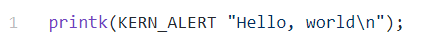
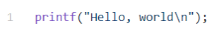

Which of the following code examples prints "Hello, world" to the kernel log from a Linux kernel module?
Option 1:

Option 2:

Select the purpose of a module’s init function specified by module_init.
Select the purpose of a module's exit function specified by module_exit
Select the reason your kernel driver should not #include <stdio.h>.
Select all of the reasons Linux transfers execution from user space to kernel space (select any which apply)
You need to write reentrant code in your kernel driver...
Your Linux kernel driver code needs a buffer several thousand bytes in size. Which of the following statements are true about how you should allocate?
When should you use modprobe to load a module instead of insmod?
Your co-worker is complaining that they are seeing an error "Invalid module format" when attempting to load their kernel module with insmod. What would you suggest?
When writing an error handler in your init function you must (select all statements which apply)